MellowYak Phase 6 — Desktop Productization
English base + Hebrew RTL · synthetic public fixture data
English base + Hebrew RTL · synthetic public fixture data
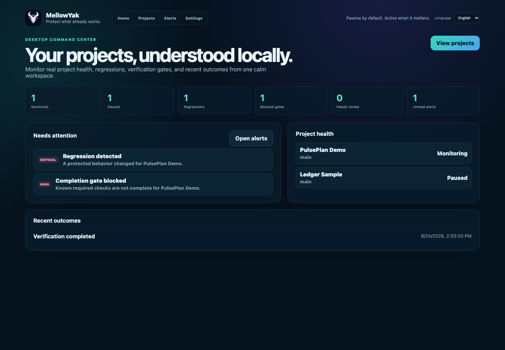
What is shown: Global project metrics, actionable alerts, project health, and recent verified outcomes.
Available actions: Open a project, all projects, or the alerts inbox.
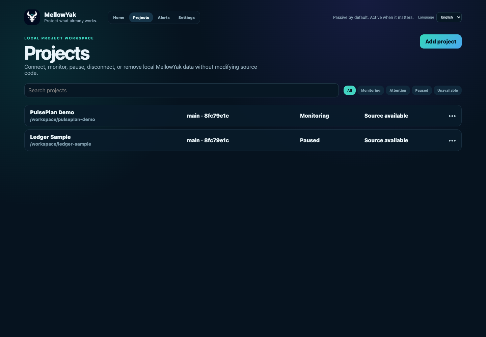
What is shown: Searchable and filterable project lifecycle table.
Available actions: Search, filter, add, open, or reveal project actions.
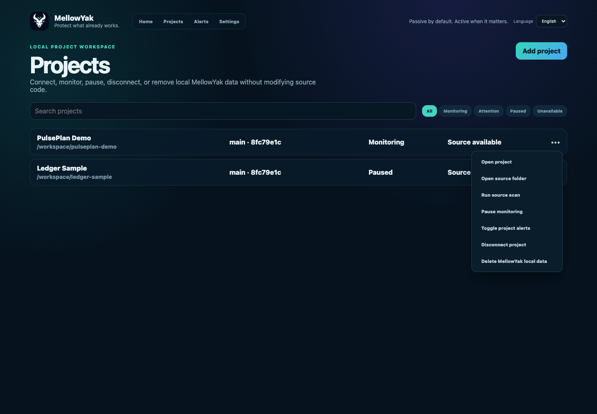
What is shown: Bounded project operations with destructive actions visually separated.
Available actions: Open, reveal source, scan, pause, mute, disconnect, or delete local data.
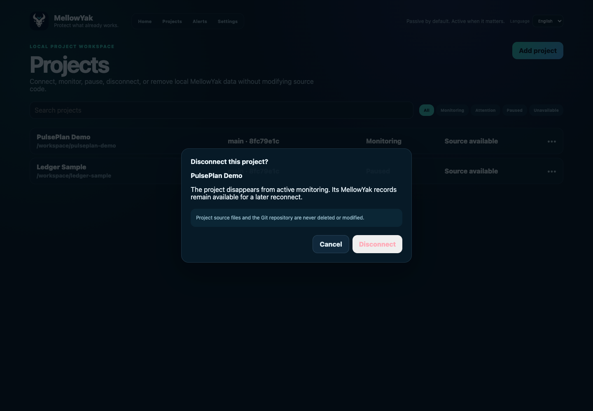
What is shown: Explains that monitoring stops while MellowYak records and source remain safe.
Available actions: Cancel or disconnect.
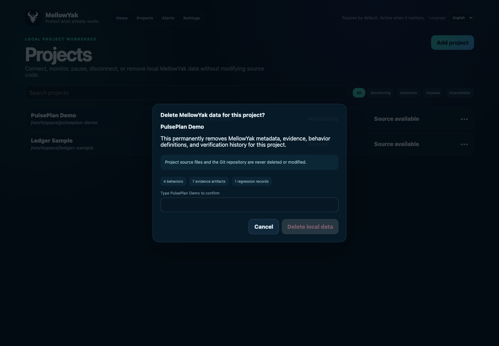
What is shown: Shows the local records affected and requires the exact project name.
Available actions: Cancel or permanently delete only MellowYak project data.
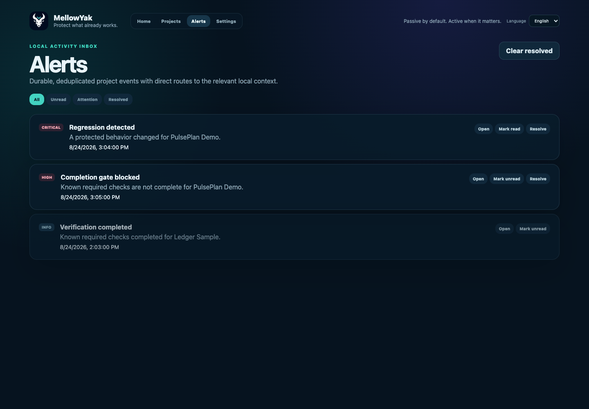
What is shown: Persistent regression, gate, and resolved outcome records.
Available actions: Filter, open context, mark read or unread, resolve, and clear resolved.
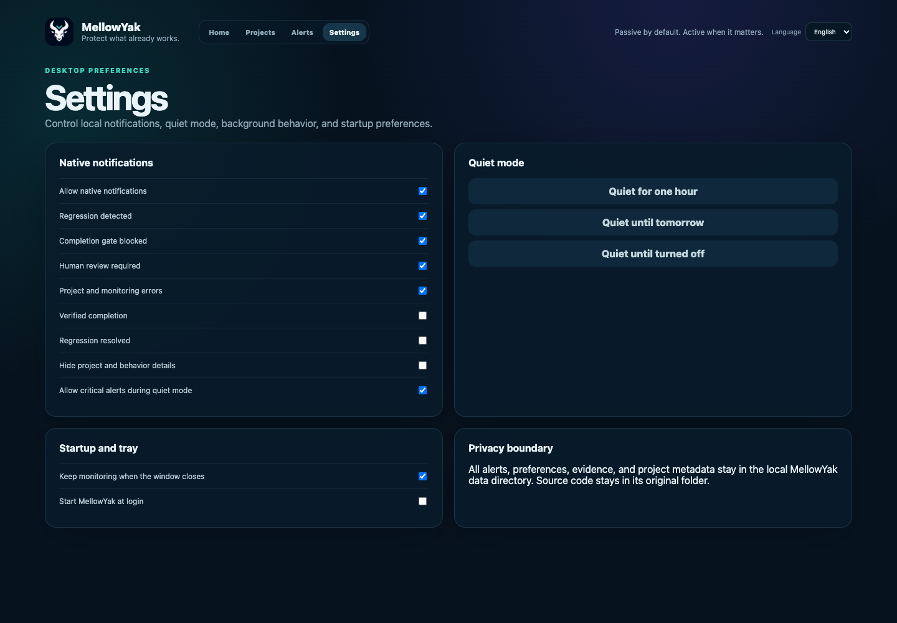
What is shown: Native notification categories, privacy detail controls, quiet mode, background close, and login startup.
Available actions: Toggle alert categories, quiet mode, background lifecycle, and start at login.
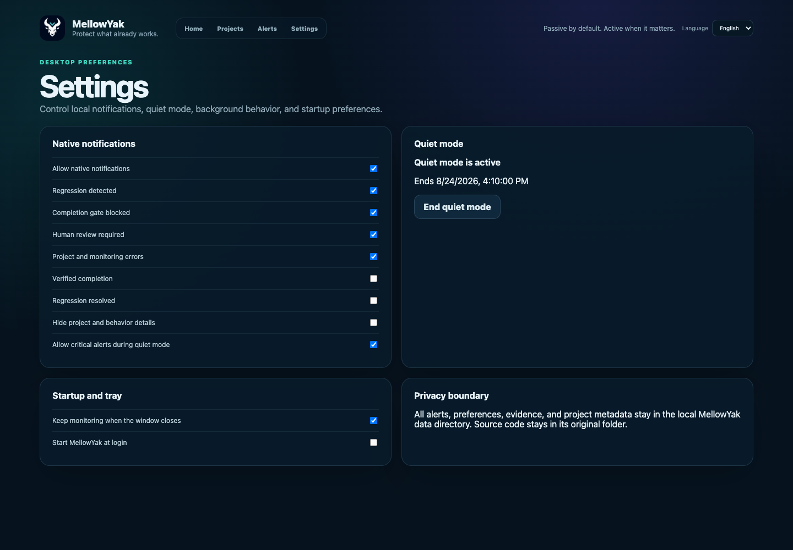
What is shown: Persistent time-bounded suppression state with an explicit end action.
Available actions: End quiet mode.
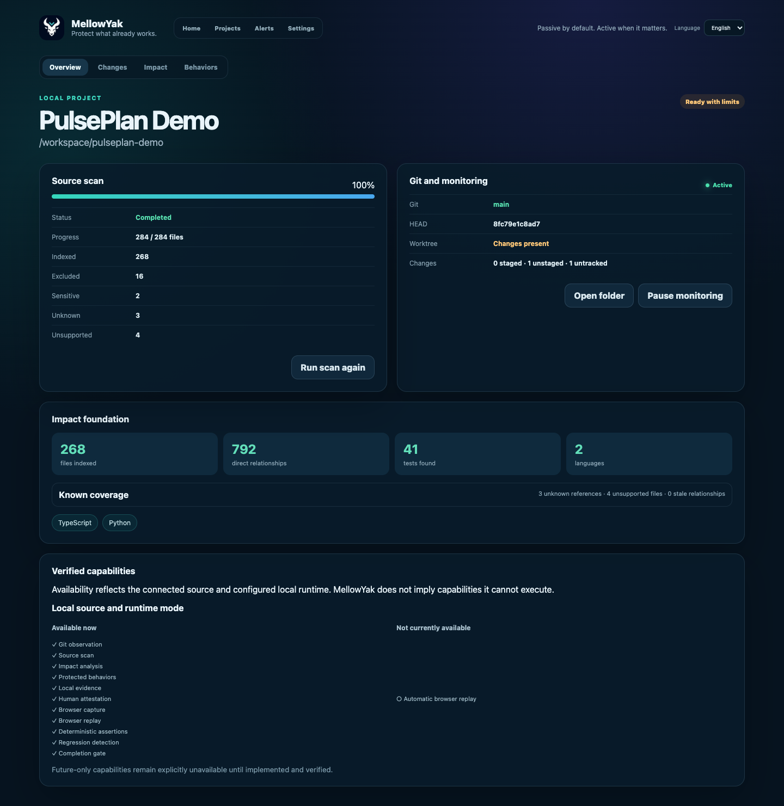
What is shown: Truthful available and unavailable features for a local source plus runtime.
Available actions: Review source scan, Git, impact, evidence, replay, regression, and gate availability.
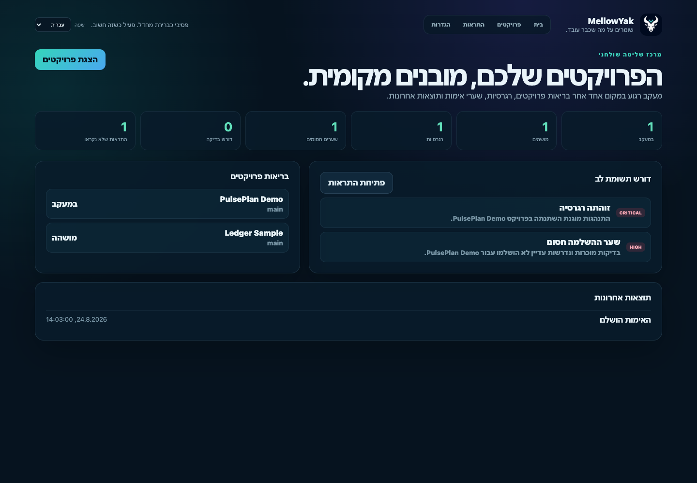
What is shown: The complete command center mirrored and translated right-to-left.
Available actions: Open projects, alerts, and project context.
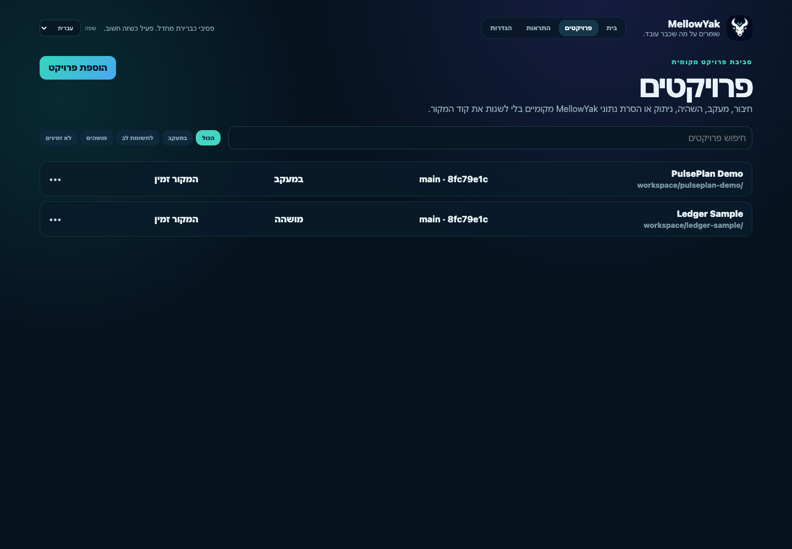
What is shown: Project search, filters, states, and actions in full RTL.
Available actions: Search, filter, add, open, and manage projects.
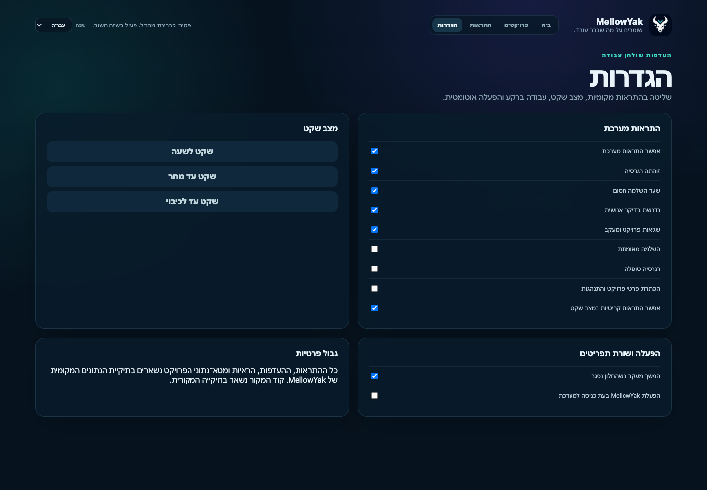
What is shown: Notification, quiet mode, startup, and privacy settings in full RTL.
Available actions: Control all desktop preferences.